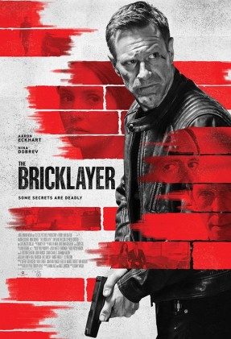

The Bricklayer
Jenis : Action, Thriller
Produser : Gerard Butler, Conor Charles, Boaz Davidson
Sutradara : Renny Harlin
Penulis : Pete Travis, Hanna Weg
Produksi : Millenium Media
Casts : Aaron Eckhart, Nina Dobrev, Clifton Collins Jr. Tim Blake Nelson, Ilfenesh Hadera, Oliver Trevena, Akis Sakellariou, Ori Pfeffer, Lili Rich, Zachary Wills
110 Menit
Produser : Gerard Butler, Conor Charles, Boaz Davidson
Sutradara : Renny Harlin
Penulis : Pete Travis, Hanna Weg
Produksi : Millenium Media
Casts : Aaron Eckhart, Nina Dobrev, Clifton Collins Jr. Tim Blake Nelson, Ilfenesh Hadera, Oliver Trevena, Akis Sakellariou, Ori Pfeffer, Lili Rich, Zachary Wills
110 Menit
Sinopsis: Steve Vail (Aaron Eckhart) adalah pensiunan CIA yang dibujuk oleh Diretur CIA, O’Malley (Tim Blake Nelson) untuk kembali bertugas. Vail mendapat misi untuk mengungkap kasus kematian yang misterius dan menangkap sebuah kelompok penjahat yang memeras dan terus membunuh sampai pihak agensi membayar sesuai permintaan mereka.